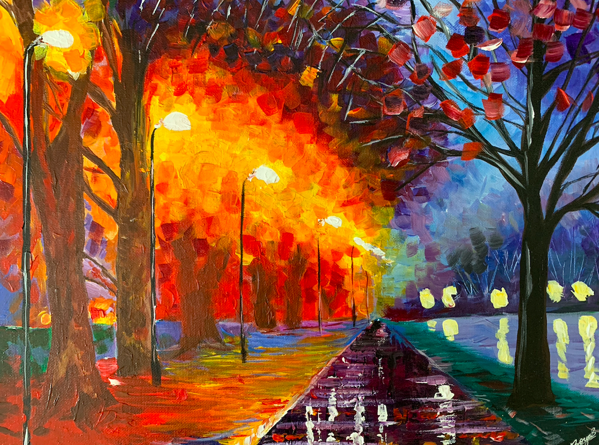
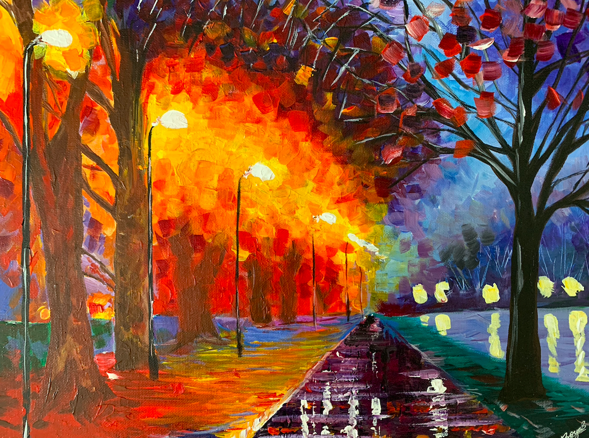

A R T P O R T F O L I O
From a very young age, I've always had a love for art. I'm mostly self-taught, but I have taken some fine arts classes to develop my skill in mediums like charcoal, pastels, watercolors, and even oils. My main focus is in portraiture and photorealism with pencil drawings, but my styles range from drawings to paintings as well. I also do a lot of digital work using Adobe Photoshop and Procreate to create graphics on larger scales.


 
